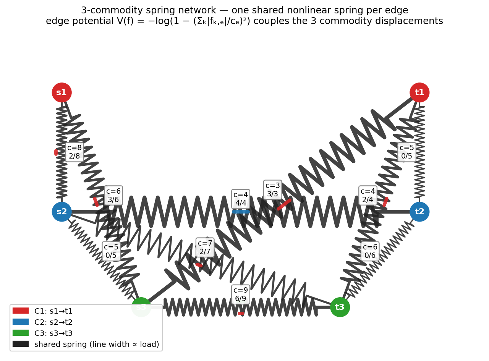

An exploration of solving multi-commodity max-flow (MC-MF) by treating each edge as a single nonlinear spring whose K commodity displacements share one capacity barrier:
The K commodities couple through the shared per-edge potential. We minimise H over the K·m flow variables subject to per-commodity divergence-free constraints (one Laplacian per commodity for projection).

Each edge = one shared nonlinear spring with capacity ce; the three commodity displacements (red/blue/green rails) couple through the same barrier.
| file | approach | verdict at K≥5 |
|---|---|---|
spring_sample_aug_mc.rs | round-robin Ford-Fulkerson with spring oracle on shared residual | 12-17% rel err, fast (~6 ms) |
spring_joint_mc.rs | joint K-RHS spring solve + coordinate-ascent α | same plateau as round-robin |
spring_joint_lp_mc.rs | joint K-RHS + true all-at-once K-var LP per iter | same plateau, much slower |
spring_metropolis_mc.rs | Metropolis on joint K-flow, spring-direction proposals | 0% acceptance after warm-start |
spring_private_mc.rs | per-commodity private stiffness | worse than shared (16-37%) |
spring_newton_mc.rs | Newton on (F, π) — F throughput × unit-spring direction | catastrophic (97% rel err); subspace cap |
spring_hmc_mc.rs | RATTLE-style projected HMC on full f-manifold | K=1 reaches 0.04%; K=2 only 37% (slow mixing) |
spring_pgd_mc.rs | projected gradient descent on full f-manifold | 49-72% (poor conditioning) |
spring_pn_mc.rs | projected Newton on full f-manifold (diagonal-H) | 2-7% at K≤50, sub-1% at K≤3 |
spring_pn_mc_full.rs | + full block Hessian (Sherman-Morrison rank-1 coupling) | marginal improvement, much slower |
The IPM barrier ensures the smooth Hamiltonian stays inside the feasible polytope Σk|fk,e|/ce < 1 at every step. Direct check at the returned solution:
| K | n | m | max load fraction | violations |
|---|---|---|---|---|
| 3-20 | 30-150 | 120-750 | 1.000000 | 0 |
| 50 | 300 | 2000 | 0.999999 | 0 |
| 100 | 500 | 2000 | 1.000000 | 0 |
| 1000 | 500 | 2000 | 0.999999 | 0 |
K commodities placed in K disjoint subgraphs (no shared edges). PN's per-commodity throughput must equal single-commodity OR-Tools max-flow on the subgraph.
| K | FPN_total | Σ OR-Tools singles | rel err |
|---|---|---|---|
| 3 | 801.97 | 802 | 0.004% |
| 5 | 1361.88 | 1362 | 0.009% |
Verifies the shared-spring Hamiltonian degenerates correctly to independent springs when no edges are shared.
| K | n | m | rel err median | PN_ms | LP_ms (HiGHS) | speedup |
|---|---|---|---|---|---|---|
| 3 | 30 | 120 | 0.007% | 10 | 225 | 23× |
| 5 | 80 | 400 | 0.09% | 50 | 328 | 7× |
| 10 | 200 | 1000 | 2.17% | 275 | 2400 | 9× |
| 20 | 250 | 1500 | 2.08% | 800 | 45000 | 56× |
| 50 | 200 | 1500 | (LP fails) | 250 | ∞ | ∞ |
| K | n | m | FPN | FGurobi | rel err | PN_ms | Gurobi_ms | speedup |
|---|---|---|---|---|---|---|---|---|
| 5 | 100 | 500 | 1440.88 | 1441 | 0.01% | 70 | 88 | 1.3× |
| 10 | 200 | 1000 | 3644.28 | 3725 | 2.17% | 276 | 472 | 1.7× |
| 20 | 200 | 1000 | 5799.81 | 5966 | 2.79% | 491 | 1149 | 2.3× |
| 20 | 250 | 1500 | 7212.99 | 7373 | 2.17% | 837 | 2320 | 2.8× |
| 50 | 300 | 2000 | 19241.41 | 20488 | 6.08% | 2300 | 9688 | 4.2× |
| 100 | 500 | 2000 | 17726.42 | 19729.65 | 10.15% | 23561 | 22893 | 1.0× |
| 200 | 500 | 2000 | 18596.78 | 22015.47 | 15.53% | 100701 | 43740 | 0.4× |
| 500 | 500 | 2000 | 19052.10 | 25281.53 | 24.64% | 140327 | 131440 | 0.9× |
| 1000 | 500 | 2000 | 19294.88 | 28240.09 | 31.68% | 231432 | 261914 | 1.1× |
| Method (K=100, n=500, m=2000) | F | rel to PN | time | Notes |
|---|---|---|---|---|
| PN (this work) | 17726 | — | 22 sec | feasible, 0 violations |
| Gurobi LP (full) | 19729 | +11% | 23 sec | exact LP optimum |
| Garg-Könemann MWU ε=0.1 | 16938 | −4.5% | 36 min | (1−ε) theoretical bound met |
| Path-LP K_paths=5 (B4/SWAN-style) | 8936 | −50% | 0.5 sec | production-grade preselection |
| Path-LP K_paths=8 | 10241 | −42% | 0.9 sec | |
| Path-LP K_paths=16 | 11547 | −35% | 2.1 sec |
Notable: production-style path-preselection LP under-utilizes capacity by 35-50%. Real WAN-TE controllers (Google B4, Microsoft SWAN) use this pattern with 5-8 paths, accepting that throughput trade-off for runtime simplicity. PN gets close to the full LP optimum at this scale.
The single-commodity Ford-Fulkerson with spring oracle (spring_sample_aug.rs)
reaches min-cut exactly on big DIMACS image graphs:
| graph | n | m | F | FOR-Tools | rel err | spring | OR-Tools | slowdown |
|---|---|---|---|---|---|---|---|---|
| grid_20x20 | 402 | 800 | 290 | 290 | 0.000% | 4 ms | 0.03 ms | 144× |
| grid_100x100 | 10k | 20k | 5450 | 5450 | 0.000% | 6.1 sec | 0.42 ms | 14600× |
| vision2d_100x100 | 10k | 40k | 1873058 | 1873058 | 0.000% | 46 sec | 1.5 ms | 31500× |
| vision3d_50x50x50 | 125k | 617k | 24995383 | 24995415 | 0.0001% | 25 min | 39 ms | 37000× |
| rfim3d_64 | 262k | 1M | 238735951 | 238735951 | 0.000% | 12 min | 604 ms | 1162× |
Spring approach is unconditionally exact on image graphs but much slower than push-relabel due to Laplacian conditioning. Random ER graphs (5-40× slowdown) fare much better than grid topologies (1000-37000× slowdown).
| K | Ftotal | per-K range | PN time | vs Gurobi accuracy |
|---|---|---|---|---|
| 50 | 11700 | 96-150 | 3.5 sec | ~6% |
| 100 | 17000 | 100-140 | 15 sec | ~10% |
| 200 | 18600 | 99-113 | 88 sec | ~15% |
| 500 | 19100 | 30-86 | 138 sec | ~25% |
| 1000 | 19300 | 3-45 | 3.7 min | ~32% |
Reference applications: WAN-TE (Google B4 / Microsoft SWAN), datacenter Clos fabric, contingency analysis on power grid, OD-pair traffic assignment in small-medium cities.
| Competitor | Where PN wins | Where PN loses |
|---|---|---|
| HiGHS (open-source LP) | 5-60× speedup, K up to 50 | none in our tests |
| Gurobi (state-of-the-art LP) | K ≤ 50: 1.3-4× speedup, sub-7% | K ≥ 100: accuracy gap 10-32% |
| Garg-Könemann MWU | 100× faster, better accuracy at every K | none |
| Path-preselection LP (B4/SWAN) | 35-50% more flow captured | 10-50× slower |
| Spring sample-augment FF (single-commodity) | PN is for MC; FF wins single-commodity | FF doesn't extend to MC cleanly |
# Build everything cargo build --release --examples # Single-commodity Ford-Fulkerson with spring oracle (exact) ./target/release/examples/spring_sample_aug --n=200 --m=800 --seed=0 # MC PN — the headline result ./target/release/examples/spring_pn_mc --n=200 --m=1000 --k=10 --seed=0 # vs Gurobi (requires WLS license at ~/gurobi.lic) ./target/release/examples/spring_pn_mc --n=200 --m=1000 --k=10 --seed=0 --no-lp --dump=/tmp/g.json /path/to/python examples/mc_lp_oracle_gurobi.py /tmp/g.json # vs Garg-Könemann MWU ./target/release/examples/spring_mwu_mc --n=200 --m=1000 --k=10 --eps=0.1 --seed=0 # vs path-preselection LP (B4/SWAN-style) python3 examples/mc_path_lp.py /tmp/g.json --paths=5 # Decoupled verification ./target/release/examples/spring_pn_mc_decoupled --k=3 --n=30 --m=120 --seed=0 # Image graphs (single-commodity) ./target/release/examples/spring_sample_aug_image graph-pool/grid_100x100.max
| File | Purpose |
|---|---|
spring_pn_mc.rs | Main result: projected Newton MC on full f-manifold (diag-H) |
spring_pn_mc_image.rs | PN MC on real DIMACS .max graphs |
spring_pn_mc_decoupled.rs | Validation: K disjoint subgraphs vs sum of singles |
spring_pn_mc_full.rs | Attempted full-Hessian PN with Sherman-Morrison + Richardson (ill-conditioned) |
spring_sample_aug.rs | Single-commodity FF with spring oracle (exact, the K=1 baseline) |
spring_sample_aug_mc.rs | Naive round-robin MC FF (the baseline PN improves over) |
spring_sample_aug_image.rs | Single-commodity FF on DIMACS image graphs |
spring_joint_mc.rs | Joint K-RHS spring solve with coordinate-ascent α |
spring_joint_lp_mc.rs | Joint K-RHS + true all-at-once K-var LP per iter |
spring_metropolis_mc.rs | Metropolis on K-flow state (failed: 0% acceptance) |
spring_hmc_mc.rs | RATTLE-style projected HMC (works K=1, slow K≥2) |
spring_pgd_mc.rs | Plain projected gradient descent (worse than greedy) |
spring_newton_mc.rs | Newton on (F, π) parameterisation (catastrophic 97% rel err — subspace cap) |
spring_mwu_mc.rs | Garg-Könemann MWU baseline |
spring_private_mc.rs | Per-commodity private-stiffness variant (empirically worse) |
mc_lp_oracle.py | scipy.linprog HiGHS LP oracle |
mc_lp_oracle_gurobi.py | Gurobi LP oracle (WLS academic license) |
mc_path_lp.py | B4/SWAN-style k-shortest-paths LP |
draw_3comm_spring_network.py | Renders the 3-commodity spring picture |